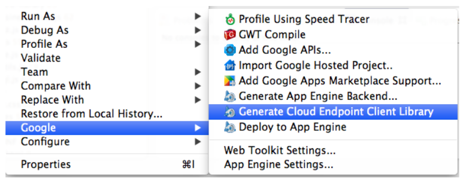

Starting point
In App Engine 101 we covered
- Working with App Engine in Eclipse
- The anatomy of a web app
- Servlets
- Datastore Entities
- Datastore JDO
- JSP
- Passing parameters
This session
Here, we cover
- Logging
- Memcache
- Blobstore and Image Service
- Google Cloud Endpoints
- Signin
- The App Engine web interface
Logging
- Use
java.util.loggingapproach - On dev server, shows in console
- On live server, shows in admin interface
Logger log = Logger.getLogger(CreateServlet.class.getName());
log.info("A log message!");
Memcache
- An in-memory cache
- Store often-used data here, for example:
- Session data
- User preferences
- Queries performed on most pages of a site
- Classes implementing
Serializable
- Pattern:
- Check if data is in memcache
- If it is: use it
- If not: get from datastore and put in memcache
Memcache
Make your class Serializable
public class Person implements Serializable
Use code to check and put in cache similar to this
String key = "Person"+id;
MemcacheService syncCache = MemcacheServiceFactory.getMemcacheService();
syncCache.setErrorHandler(ErrorHandlers.getConsistentLogAndContinue(Level.INFO));
Person p = (Person) syncCache.get(key);
if (p == null) {
log.info("Cache miss for " + key);
p = pm.getObjectById(Person.class, id);
syncCache.put(key, p);
} else {
log.info("Cache hit for " + key);
}
Exercise 1: Memcache
- Amend update.jsp to first check the cache for the Person before reading Datastore
Blobstore and Image Service
Blobstore is a storage service for arbitrary-size binary data
- No querying on Blobstore
- Key/value interface
Step 1: Create a form in your JSP that posts to a special Blobstore URL
<%@ page import="com.google.appengine.api.blobstore.BlobstoreServiceFactory" %>
<%@ page import="com.google.appengine.api.blobstore.BlobstoreService" %>
<% BlobstoreService blobstoreService = BlobstoreServiceFactory.getBlobstoreService(); %>
<form action="<%= blobstoreService.createUploadUrl("/uploadpicture") %>"
method="post" enctype="multipart/form-data">
<input type="file" name="pictureFile">
</form>
Blobstore and Image Service
Step 2: Create a servlet that gets passed the information once uploaded
BlobstoreService blobstoreService = BlobstoreServiceFactory.getBlobstoreService();
ImagesService imagesService = ImagesServiceFactory.getImagesService();
Map<String, List<BlobKey>> blobs = blobstoreService.getUploads(req);
if (blobs.size() == 0) {
resp.sendRedirect("/create.jsp");
} else {
BlobKey k = blobs.get("pictureFile").get(0);
// Do something with the blob key
}
Blobstore and Image Service
Step 3: Use the Image Service to create a serving URL and a thumbnail URL
ServingUrlOptions soOriginal = ServingUrlOptions.Builder.withBlobKey(k);
ServingUrlOptions soThumb = ServingUrlOptions.Builder.withBlobKey(k).imageSize(100);
String origUrl = imagesService.getServingUrl(soOriginal);
String thumbUrl = imagesService.getServingUrl(soThumb);
req.setAttribute("origUrl", origUrl);
req.setAttribute("thumbUrl", thumbUrl);
req.getRequestDispatcher("/create.jsp").forward(req, resp);
Blobstore and Image Service
Step 4: Use the serving URL and thumbnail URL in your JSP page
<% if (request.getAttribute("thumbUrl") != null) { %>
<img src="<%=request.getAttribute("thumbUrl")%>">
<% } %>
Google Cloud Endpoints
- We've been creating our own URL structure with servlets
- We have to manage the semantics of the HTTP methods (POST, GET, etc.)
- Code for managing entities is spread across servlets/JSP pages
Google Cloud Endpoints can help!
- Create a RESTful API for your application to manage data
- Create one class as an API
- You get libraries for your API for iOS, Android and Javascript
Google Cloud Endpoints
Step 1: Create an endpoint class
Annotate with @Api
@Api(name = "person", version = "v1", description = "Person API")
public class PersonEndpoint {
}
Google Cloud Endpoints
Step 2: Create API Methods
Annotate with @ApiMethod
@ApiMethod(name = "read", httpMethod = HttpMethod.GET, path = "/person")
public Person readPerson(@Named("id") Long id) {
PersistenceManager pm = PMF.get().getPersistenceManager();
Person person = null;
try {
person = pm.getObjectById(Person.class, id);
} finally {
pm.close();
}
return person;
}
Google Cloud Endpoints
Step 3: Create the library
Google Cloud Endpoints
Step 4: Use the library
<script>
function init() {
var ROOT = '//' + window.location.host + '/_ah/api';
gapi.client.load('person', 'v1', function() {
console.log('Loaded API');
}, ROOT);
}
</script>
<script src="https://apis.google.com/js/client.js?onload=init"></script>
gapi.client.person.list().execute(com.samples.exercises.displayPeople);
com.samples.exercises.displayPeople = function(datalist) {
}
Google Cloud Endpoints
Some explanations ...
- It's the same code as you've written all along
- The parameters to the method are the same as your request parameters in servlet or JSP
@Namedtells your method to use the "id" parameter@Nullabletells your method the parameter is optional- You can see your API and call the methods at http://localhost:8888/_ah/api/explorer
Exercise 2: Cloud Endpoints
- Convert your servlets to a Cloud Endpoint
- Here's a skeleton
@Api(name = "person", version = "v1", description = "Person API")
public class PersonEndpoint {
@ApiMethod(name = "list", path = "/list", httpMethod = HttpMethod.GET)
public CollectionResponse listPersons(
@Nullable @Named("cursor") String cursorString,
@Nullable @Named("limit") Integer limit) {
}
@ApiMethod(name = "create", httpMethod = HttpMethod.POST, path = "/person")
public Person insertPerson(Person person) {
}
@ApiMethod(name = "remove", httpMethod = HttpMethod.DELETE, path = "/person")
public void removePerson(@Named("id") Long id) {
}
@ApiMethod(name = "read", httpMethod = HttpMethod.GET, path = "/person")
public Person readPerson(@Named("id") Long id) {
}
}
Restricting to signed-in users
Signin options (specified when creating your app)
- Your Google domain (Google Apps)
- Any Google account
- OpenID accounts
Specify this in your web.xml
<security-constraint>
<web-resource-collection>
<url-pattern>/*</url-pattern>
</web-resource-collection>
<auth-constraint>
<role-name>*</role-name>
</auth-constraint>
</security-constraint>
A tour of the App Engine interface and Namekeepr
- The App Engine management console
- Namekeepr, a sample application
Useful links
<Thank You!>